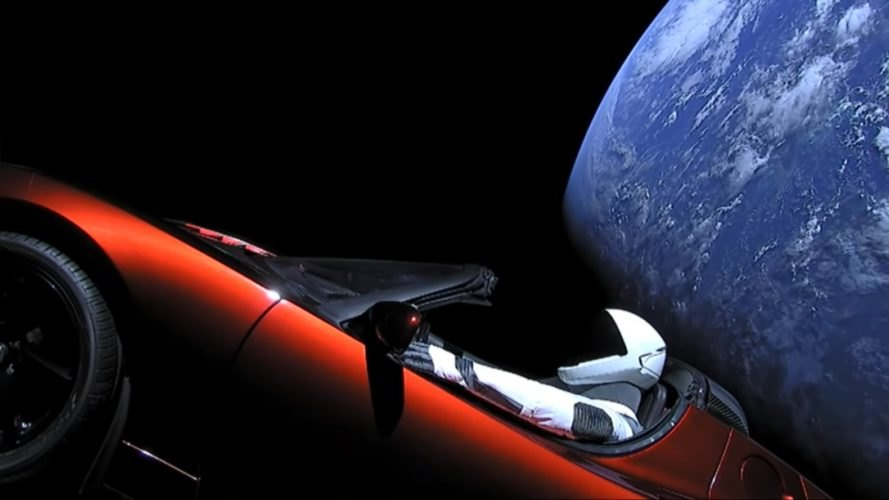

Elon Musk
The Man Who Sent A Car To Outer Space

Elon Musk's personal Tesla Roadster cruising in outer space with Starman in the driver's seat. The Roadster was a package on board the Falcon Heavy rocket from SpaceX.
Timeline of the life of Elon Musk
- 1971: Born to engineer father and model mother in South Africa
- 1979: Ardent reader and reads 10 hours per day. Runs out of books to read so he finishes the entire Encyclopedia Britannica
- 1983: Learns BASIC by finishing a 6 month course in 3 days. Builds first video game, Blastar and sells it for $500.
- 1988: Moves to Canada and starts working odd jobs. Starts college a year later and gets an internship by cold calling executives.
- 1994: Gets a Wharton degree in economics and drops out of Stanford PhD after 2 days of classes.
- 1995: Starts Zip2 with his brother and sells it 4 years later for $22 million.
- 2000: Starts X.com which later on went to become PayPal. From 2000 Elon started learning how to build rockets by reading books.
- 2002: Starts SpaceX with his own money and later gets $250 million from the sale of PayPal.
- 2004: Invests in Tesla.
- 2009: Introduces the Model S.
- 2017: Successfully launches the world's most powerful reusable rocket which launches a Tesla Roadster into space.
"I would like to die on Mars, just not on impact."
- ELON MUSK